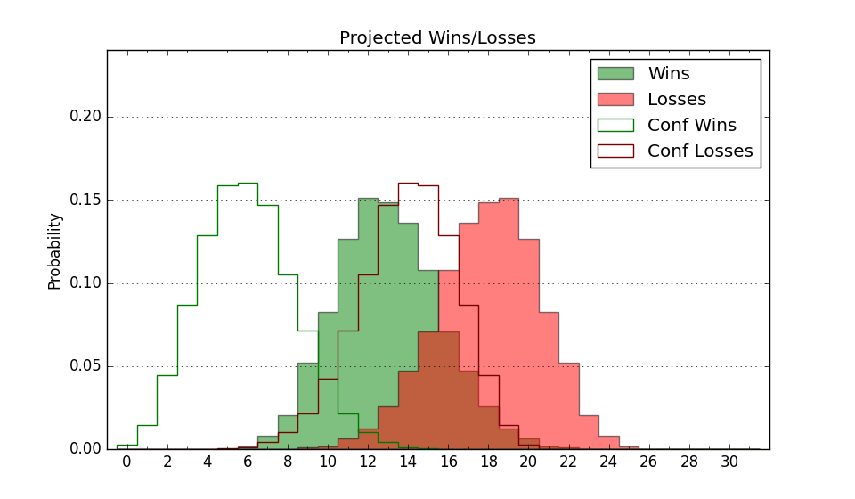

| Home | Game Probabilities | Conferences | Preseason Predictions | Odds Charts | NCAA Tournament |
| City: | College Park, Maryland | |
| Conference: | Big Ten (6th)
| |
| Record: | 0-1 (Conf) 4-4 (Overall) | |
| Ratings: | Comp.: 7.2 (99th) Net: 1.1 (165th) Off: 95.1 (292nd) Def: 94.0 (42nd) SoR: 0.2 (232nd) |
| Remaining | ||||||
|---|---|---|---|---|---|---|
| Date | Opponent | Win Prob | Pred. | |||
| 12/6 | Penn St. (92) | 63.4% | W 69-65 | |||
| 12/12 | Alcorn St. (284) | 91.3% | W 78-62 | |||
| 12/19 | Nicholls St. (246) | 88.3% | W 74-60 | |||
| 12/22 | @ UCLA (59) | 22.8% | L 59-67 | |||
| 12/28 | Coppin St. (359) | 98.0% | W 76-50 | |||
| 1/2 | Purdue (1) | 10.3% | L 61-76 | |||
| 1/7 | @ Minnesota (118) | 40.9% | L 65-67 | |||
| 1/11 | Michigan (60) | 50.4% | W 69-68 | |||
| 1/14 | @ Illinois (16) | 9.2% | L 57-73 | |||
| 1/17 | @ Northwestern (32) | 15.7% | L 58-69 | |||
| 1/21 | Michigan St. (22) | 30.2% | L 58-64 | |||
| 1/24 | @ Iowa (25) | 12.9% | L 68-82 | |||
| 1/27 | Nebraska (65) | 53.3% | W 67-66 | |||
| 2/3 | @ Michigan St. (22) | 11.3% | L 54-68 | |||
| 2/6 | Rutgers (52) | 47.8% | L 60-61 | |||
| 2/10 | @ Ohio St. (21) | 11.2% | L 60-74 | |||
| 2/13 | Iowa (25) | 33.6% | L 72-77 | |||
| 2/17 | Illinois (16) | 25.5% | L 61-69 | |||
| 2/20 | @ Wisconsin (19) | 10.9% | L 58-71 | |||
| 2/25 | @ Rutgers (52) | 21.2% | L 56-65 | |||
| 2/28 | Northwestern (32) | 38.8% | L 62-65 | |||
| 3/3 | Indiana (89) | 62.9% | W 68-64 | |||
| 3/10 | @ Penn St. (92) | 33.7% | L 65-69 | |||
| Previous | Game Score | |||||
| Date | Opponent | Win Prob | Result | Off | Def | Net |
| 11/7 | Mount St. Mary's (276) | 90.7% | W 68-53 | -2.1 | 0.9 | -1.2 |
| 11/10 | (N) Davidson (133) | 58.5% | L 61-64 | -11.3 | 1.7 | -9.6 |
| 11/12 | (N) UAB (159) | 66.7% | L 63-66 | -11.4 | 0.4 | -10.9 |
| 11/17 | @Villanova (35) | 16.2% | L 40-57 | -25.3 | 14.1 | -11.2 |
| 11/21 | UMBC (329) | 94.9% | W 92-68 | -7.1 | 8.2 | 1.1 |
| 11/25 | South Alabama (271) | 90.5% | W 68-55 | -8.7 | 2.5 | -6.2 |
| 11/28 | Rider (336) | 95.4% | W 103-76 | 25.4 | -19.8 | 5.6 |
| 12/1 | @Indiana (89) | 33.3% | L 53-65 | -13.2 | 1.0 | -12.1 |
| Stats & Trends | |||||
|---|---|---|---|---|---|
| Current | Day | Week | Month | Season | |
| Composite | 7.2 | -0.1 | -3.8 | -10.6 | -10.6 |
| Comp Rank | 99 | -- | -27 | -69 | -69 |
| Net Efficiency | 1.1 | -0.2 | -2.9 | -- | -- |
| Net Rank | 165 | -1 | -37 | -- | -- |
| Off Efficiency | 95.1 | -0.1 | +2.4 | -- | -- |
| Off Rank | 292 | -- | +16 | -- | -- |
| Def Efficiency | 94.0 | -0.1 | -5.3 | -- | -- |
| Def Rank | 42 | -2 | -21 | -- | -- |
| SoS Rank | 264 | -- | -13 | -- | -- |
| Exp. Wins | 13.0 | -0.1 | -1.5 | -6.0 | -6.0 |
| Exp. Conf Wins | 6.0 | -0.1 | -1.5 | -4.1 | -4.1 |
| Conf Champ Prob | 0.0 | -0.0 | -0.1 | -4.4 | -4.4 |

| Advanced Stats | ||
|---|---|---|
| Stat | Value | Rank |
| Off Eff FG % | 0.438 | 331 |
| Off Ast Ratio | 0.108 | 327 |
| Off ORB% | 0.332 | 49 |
| Off TO Rate | 0.166 | 265 |
| Off FT Ratio | 0.460 | 15 |
| Def Eff FG % | 0.468 | 93 |
| Def Ast Ratio | 0.128 | 104 |
| Def ORB% | 0.301 | 260 |
| Def TO Rate | 0.191 | 22 |
| Def FT Ratio | 0.286 | 101 |